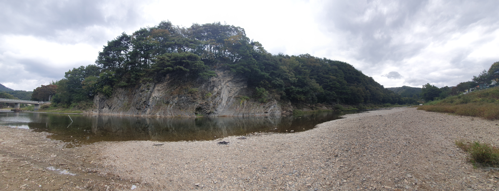
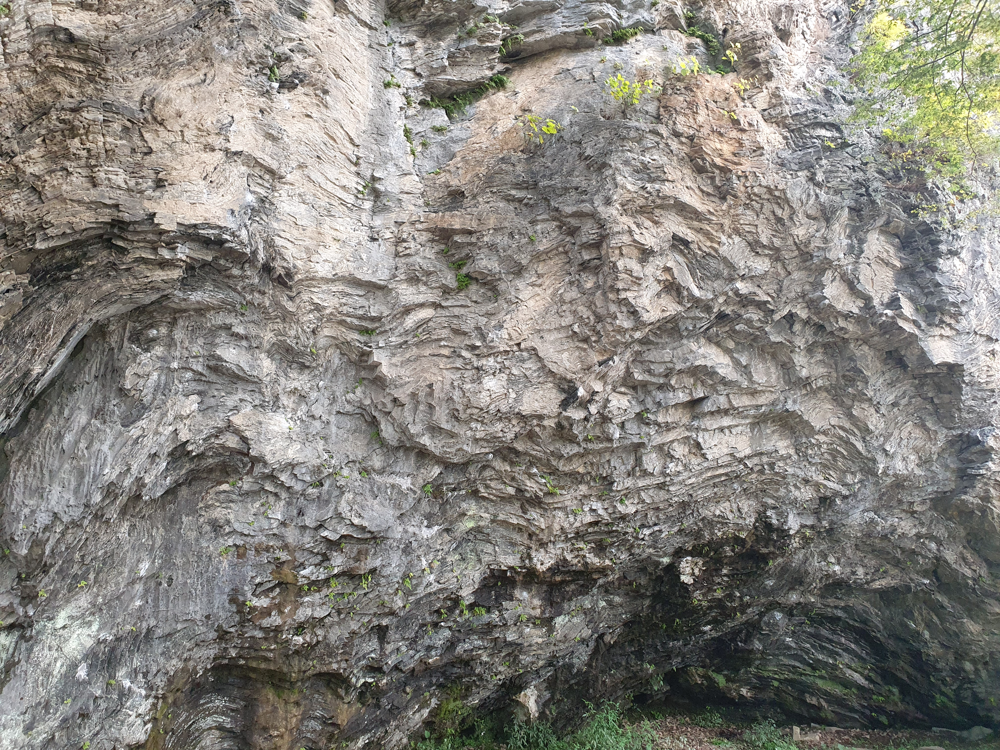
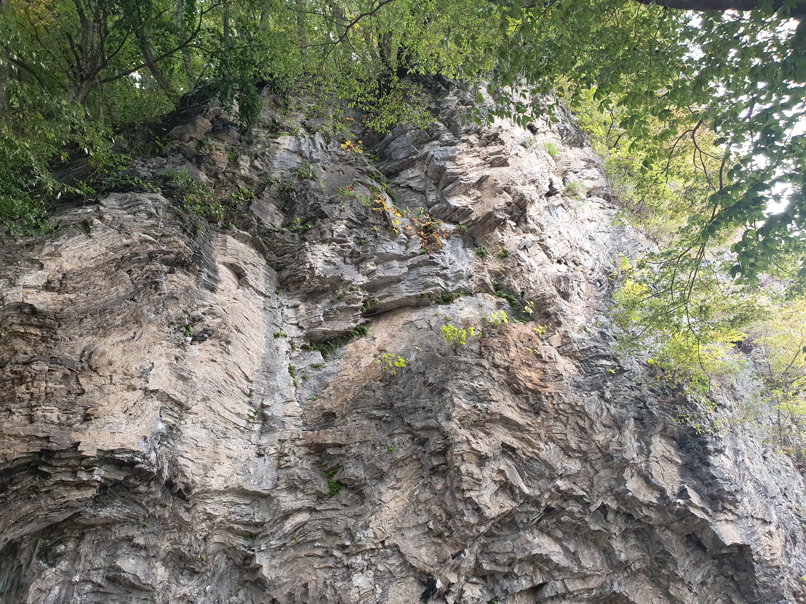
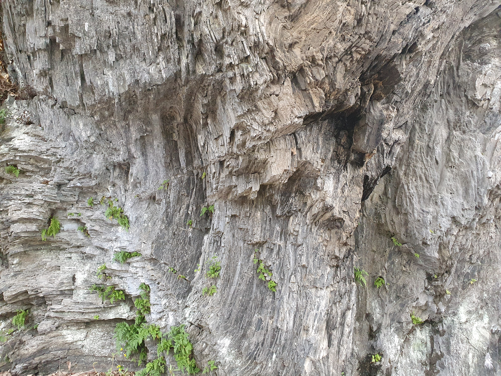
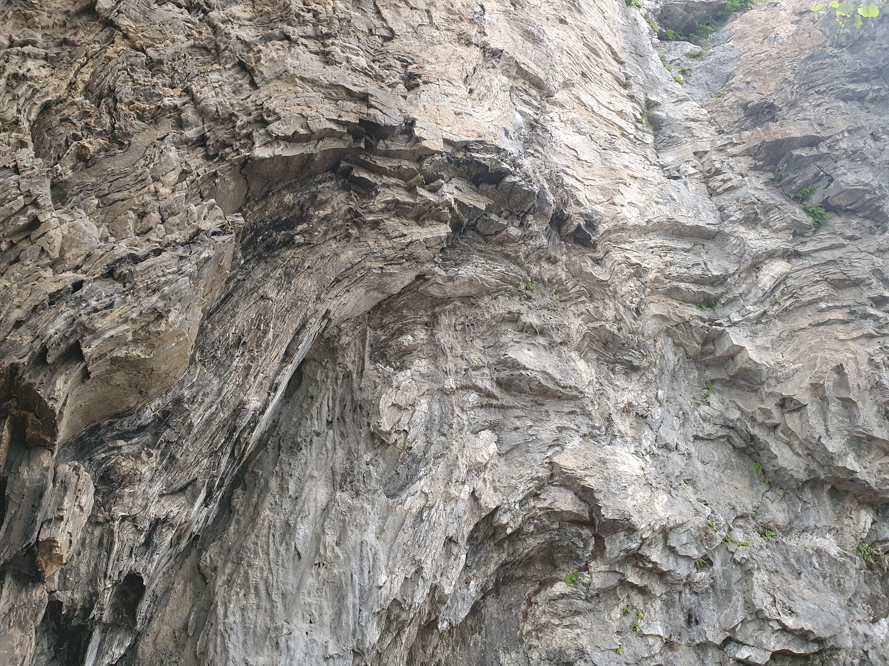

1. 진천 농다리 지질 구조 관찰 (Interactive)
하천 건너편에 길게 늘어선 절벽(하식애)의 모습입니다. 사진 위에 표시된 노란색 영역(핫스팟)을 클릭하면 해당 부위의 확대 사진을 볼 수 있습니다. 층리가 휘어진 모습과 단층선을 찾아보세요.

2. 청주 청석굴 지형 및 지질
청석굴 주변의 지형 전경과 절벽을 구성하는 암석의 뚜렷한 줄무늬(층리/엽리)를 관찰해 봅시다.
청석굴 전경
암벽 세부 관찰 (클릭하여 확대)



